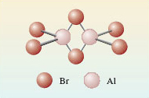

2 Molecular and empirical formulas
Cl2, Br2, I2 and CO2 are called molecular formulas.
They tell us how the atoms are grouped together in the molecules from which the substance is built up.
Suggest why Cl2, Br2, I2and CO2 are referred to as molecular substances?
Answer
They have structures which allow discrete molecules to be picked out.
Now let’s throw in a slight complication.
Take a look at the following video, which shows aluminium combining with the halogen elements in a chemical reaction.
Video 1: Reaction of aluminium and the halogens
Describe the reaction of aluminium with bromine – state your observations in a single sentence.
In amongst your observations you will most probably have noted that aluminium (a solid) was mixed with liquid bromine. There was a short interval before the reaction got going, but when it did it was pretty spectacular (flames and smoke were produced). It’s perhaps worth adding here, that not all chemical reactions are quite so dramatic!
The product of this reaction is a white solid called aluminium bromide, which consists of three bromine atoms for every aluminium atom.
- What chemical formula would you expect for aluminium bromide?
- AlBr3 The subscript three following bromine indicates the Al: Br ratio is 1:3. Remember a subscript 1 after the Al is taken as read and never shown in a formula.
Actually this is an unfair question, because if you examine the crystal structure of solid aluminium bromide you’ll find it is actually made up of Al2Br6 molecules (Figure 3). The two aluminium atoms, and four of the bromine atoms at the ends of the molecule, lie in the same plane (at right-angles to the plane of the paper). The two bromines that bridge the aluminium’s lie above and below this plane.
But, note the ratio of Al to Br is still 1:3.

This can be explained if you consider AlBr3 to be the simplest ratio of the elements present in the substance – this is known as the empirical formula.
Do these molecules have the same empirical formula as the solid in which they are found?
Yes; the molecular formula is Al2Br6 but in both the molecules and the solid, the ratio of aluminium atoms to bromine atoms is 1:3.
As is the case here the empirical formula need not necessarily be the same as the molecular formula, the latter shows the actual number of atoms in one molecule of a compound.
OpenLearn - Discovering chemistry
 Except for third party materials and otherwise, this content is made available under a Creative Commons Attribution-NonCommercial-ShareAlike 4.0 Licence, full copyright detail can be found in the acknowledgements section. Please see full copyright statement for details.
Except for third party materials and otherwise, this content is made available under a Creative Commons Attribution-NonCommercial-ShareAlike 4.0 Licence, full copyright detail can be found in the acknowledgements section. Please see full copyright statement for details.